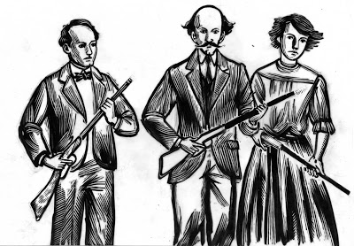
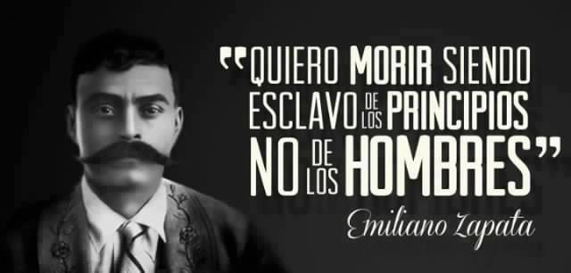
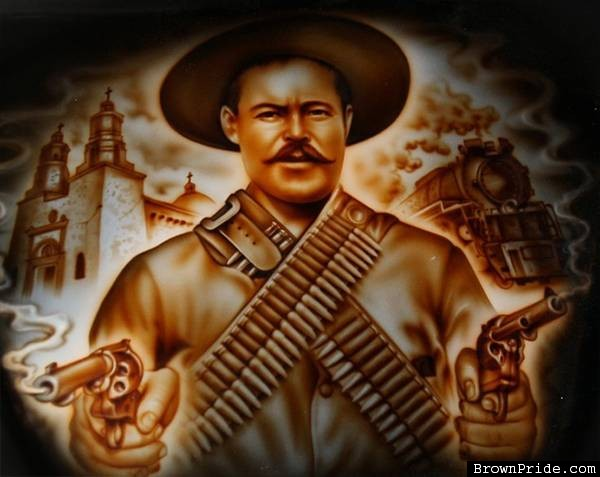
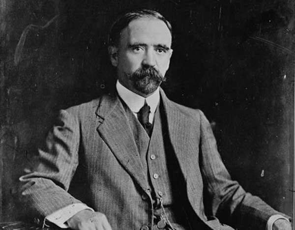

20 De Noviembre
Introducción
La Revolución mexicana fue un conflicto armado que tuvo lugar en México, dando inicio el 20 de noviembre de 1910. Históricamente, suele ser referido como el acontecimiento político y social más importante del siglo XX en México.
Los antecedentes del conflicto se remontan a la situación de México bajo el Porfiriato. Desde 1876 el general oaxaqueño Porfirio Díaz ejerció el poder en el país de manera dictatorial. La situación se prolongó por 34 años, durante los cuales México experimentó un notable crecimiento económico y estabilidad política. Estos logros se realizaron con altos costos económicos y sociales, que pagaron los estratos menos favorecidos de la sociedad y la oposición política al régimen de Díaz. Durante la primera década del siglo XX estallaron varias crisis en diversas esferas de la vida nacional, que reflejaban el creciente descontento de algunos sectores con el Porfiriato.
Cuando Díaz aseguró en una entrevista que se retiraría al finalizar su mandato sin buscar la reelección, la situación política comenzó a agitarse. La oposición al gobierno cobró relevancia ante la postura manifestada por Díaz. En ese contexto, Francisco I. Madero realizó diversas giras en el país con miras a formar un partido político que eligiera a sus candidatos en una asamblea nacional y compitiera en las elecciones. Díaz lanzó una nueva candidatura a la presidencia y Madero fue arrestado en San Luis Potosí por sedición. Durante su estancia en la cárcel se llevaron a cabo las elecciones que dieron el triunfo a Díaz.
El 18 de noviembre, con armas en mano, después de haber sido alertado del posible cateo, Aquiles Serdán reunió a sus compañeros ya preparados para iniciar la Revolución Mexicana. Fue ahí, en un pequeño lapso de horas, cuando los hermanos Serdán brillaron en la historia. Máximo Serdán, hermano menor, fue de los primeros revolucionarios que lucharon en una notoria desventaja contra los casi mil soldados que el gobernador envió para terminar con los rebeldes
Madero logró escapar de la prisión estatal y huyó a los Estados Unidos. Desde San Antonio proclamó el Plan de San Luis, que llamaba a tomar las armas contra el gobierno de Díaz el 20 de noviembre de 1910. El conflicto armado tuvo lugar en primera instancia al norte del país y posteriormente se expandió a otras partes del territorio nacional. Una vez que los sublevados ocuparon Ciudad Juárez (Chihuahua), Porfirio Díaz presentó su renuncia y se exilió en Francia.
En 1911 se realizaron nuevas elecciones donde resultó electo Madero. Desde el comienzo de su mandato tuvo diferencias con otros líderes revolucionarios, que provocaron el levantamiento de Emiliano Zapata y Pascual Orozco contra el gobierno maderista. En 1913 un movimiento contrarrevolucionario, encabezado por Félix Díaz, Bernardo Reyes y Victoriano Huerta, dio un golpe de Estado. El levantamiento militar, conocido como Decena Trágica, terminó con el asesinato de Madero, su hermano Gustavo y el vicepresidente Pino Suárez. Huerta asumió la presidencia, lo que ocasionó la reacción de varios jefes revolucionarios como Venustiano Carranza y Francisco Villa. Tras poco más de un año de lucha, y después de la ocupación estadounidenses de Veracruz, Huerta renunció a la presidencia y huyó del país.

MOVIMIENTO DE LOS HERMANOS SERDAN 18 NOVIEMBRE 1910
Los libros de historia nacional cuenta que la Revolución Mexicana inició el 20 de noviembre de 1910, pero la historia oficial inicia en Puebla, dos días antes, con los hermanos Serdán: los primeros mártires del movimiento. Fueron ellos quienes bajo los ideales de libertad y democracia, lucharon antes que nadie por un cambio en la sociedad mexicana.
- Aquiles Serdán, el menor de tres hermanos, fue uno de los hombres con espíritu antirreeleccionista que apoyó, desde el inicio, a Francisco I. Madero; en Puebla, Serdán fundó el club político: Luz y Progreso el que editó el semanario La No Reelección y cuyo tiraje fue muy corto debido a la falta de fondos de los miembros del club. Es en este semanario en el que las primeras ideas revolucionarias comenzaron a difundirse, sus páginas presentaban la afirmación que aseguraba que la República sería salvada, no por los hombres acostumbrados a gobernarla en forma despótica, sino “Por los hombres que no hayan manchado sus conciencias cometiendo atentados contra la Ley”. Ante estas publicaciones e ideas, Díaz comenzó a vigilar a los hermanos Serdán, en especial a Aquiles.
- El 18 de noviembre, con armas en mano, después de haber sido alertado del posible cateo, Aquiles Serdán reunió a sus compañeros ya preparados para iniciar la Revolución Mexicana. Fue ahí, en un pequeño lapso de horas, cuando los hermanos Serdán brillaron en la historia. Máximo Serdán, hermano menor, fue de los primeros revolucionarios que lucharon en una notoria desventaja contra los casi mil soldados que el gobernador envió para terminar con los rebeldes
- Carmen Serdán, hermana mayor de Aquiles, fue de las pocas sobrevivientes de ese conflicto; ella subió armada al techo de su casa para incitar a los vecinos a unirse a la lucha, fue herida por una bala y, después del enfrentamiento, encarcelada junto con su madre en la cárcel de la Merced.
- La lucha fue la primer batalla revolucionaria en la que Aquiles Serdán se levantó como el primer mártir de la Revolución. Serdán murió horas después de que el enfrentamiento terminara, cuando todos sus compañeros habían perecido y él logró refugiarse en un hueco en el que escondía armas; allí, a las dos de la mañana, con la casa llena de soldados buscando el cuerpo del autor intelectual del conflicto armado, un ataque de tos delató a Aquiles; fue herido de muerte y, además, recibió el tiro de gracia. Su cuerpo fue exhibido públicamente para alejar de toda idea revolucionaria a quien viera el cuerpo de uno de los primeros antirreeleccionistas.

Revolución Mexicana
BIOGRAFIA EMILIANO ZAPATA
Nació en Anenecuilco, Morelos, en 1883. De origen humilde, Zapata es sin duda el símbolo máximo de la Revolución Mexicana. Sus ideales de “Tierra y libertad” lo llevaron a proclamar, en 1911, el Plan de Ayala, documento que exigía a los dueños de las haciendas la devolución de las tierras a la clase trabajadora: la campesina. De acuerdo con la tradición, fue traicionado por el coronel Jesús Guajardo y asesinado a la entrada de la Hacienda de Chinameca, en las cercanías de Cuautla, Morelos, en 1919.
- El motivo por el que se incorporó a Emiliano Zapata al ejército fue el hecho de que había raptado a una jovencita, ya que Zapata era conocido por ser un hombre muy enamoradizo.2 La acusación la puso el padre de Inés Alfaro Aguilar, joven con quien tiempo después Zapata tendría dos hijos: Nicolás y Elena Zapata Alfaro. En la fotografía en la que Zapata aparece junto a Villa sentado en la silla presidencial, el niño más pequeño que se asoma es Nicolás. También según el historiador Jesús Sotelo Inclan, Zapata se casó con una joven de clase acomodada llamada Luisa Merino y al caer la dictadura porfirista, el 20 de agosto de 1911 contrajo matrimonio con la señorita Josefa Espejo Sánchez conocida como “La Generala” originaria de Anenecuilco, hija de don Fidencio Espejo y Guadalupe Sánchez Merino con quien procreó dos hijos más. El primero tuvo por nombre Felipe; éste nació en el cerro El Jilguero y murió a la edad de cinco años, en uno de los tantos refugios que como familia tuvieron, luego de ser mordido por una víbora de cascabel. La segunda hija fue Josefa; ella nació en Tlaltizapán y un año antes que su hermano Felipe murió a consecuencia de una picadura de alacrán. Así Josefa quedó sin hijos en poco tiempo. Sin embargo, Zapata tuvo más hijos como es el caso de Ana María Zapata, hija de Petra P. Torres.
- El 25 de noviembre de 1911 Zapata lanzó el Plan de Ayala, redactado por Otilio E. Montaño, documento que se convertiría en su estandarte y en el fiel ejemplo de la ideología de los campesinos morelenses. En él se exigía la redención de los indígenas y la repartición de los latifundios creados durante el porfiriato. Se desconocía a Francisco I. Madero como presidente y se reconocía a Pascual Orozco como jefe legítimo de la Revolución mexicana. Además, el documento postulaba que, en vista de que no se había cumplido con lo que se le había prometido al campesinado, la lucha armada era el único medio para obtener justicia.

Revolución Mexicana
BIOGRAFIA FRANCISCO VILLA
José Doroteo Arango Arámbula, mejor conocido por su seudónimo Francisco Villa o el hipocorístico de éste, Pancho Villa, fue uno de los jefes de la revolución mexicana, cuya actuación militar fue decisiva para la derrota del régimen del entonces presidente Victoriano Huerta. Originario del estado de Durango3 (se desconoce si era de Río Grande6 o de San Juan del Río ), nació el 5 de junio de 18781 y murió asesinado en una emboscada en Hidalgo del Parral (Chihuahua) el 20 de julio de 1923.Durante la revolución fue conocido como "El Centauro del Norte".
- En 1910 se unió al movimiento maderista,primero a través de su compadre Eleuterio Soto, y después mediante Abraham González, con quién tenía vínculos comerciales. En ese entonces Pancho Villa era nada más un cuatrero y en la mejor denominación un guerrillero sin causa; sin embargo, al conocer a Abraham González, representante político de Francisco I. Madero en Chihuahua, recibió de éste la educación básica que le hizo abrir los ojos al mundo político y cambiar su visión sobre su propia vida y su relación con los que estaban en el poder. El 17 de noviembre de 1910 atacó la Hacienda de Cavaría; desde ese mismo día se dedicó a reclutar gente para sus tropas.
En la lucha armada maderista se distinguió por su audacia y organización. La revolución maderista comenzó a revelar el ingenio militar y la capacidad estratégica de Pancho Villa. En el Tecolote, engañó a las fuerzas del general Navarro poniendo sombreros sobre estacas para simular un contingente mayor, obligando al general Navarro a la retirada.
Sobresalió como jefe de las batallas de San Andrés, Santa Isabel, Ciudad Camargo, Las Escobas y Estación Bauche, contra el general federal Manuel García Pueblita. Además, participó en el mayor triunfo al lado de Pascual Orozco: la batalla de Ciudad Juárez contra el general Juan N. Navarro, a quién intentó fusilar incluso en contra de Francisco I. Madero.Después de tomar Torreón por unos momentos, Villa se hace de los primeros trenes de sus fuerzas, que después servirían para transportar grandes contingentes de la División del Norte.
- El 26 de junio de 1920 Villa firmó los convenios de Sabinas, en Sabinas Coahuila, obligándose a deponer las armas y a retirarse a la Hacienda de Canutillo (en Durango), que el gobierno le concedió en propiedad por sus servicios prestados a la revolución
Álvaro Obregón llegó a la presidencia de México y cuando hubo consolidado su posición, toleró o abiertamente promovió algunos planes para asesinar a Pancho Villa. Durante la Rebelión delahuertista ―que pretendía impedir la imposición del general Plutarco Elías Calles―, ante el temor de que Pancho Villa nuevamente se levantara en armas, se decide matarlo.
- El general Calles contactó con el coronel Lara para asesinar a Villa, ofreciéndole cincuenta mil pesos y el ascenso a general. No se duda de que intervinieron elementos estadounidenses en la eliminación de Villa.2 Pancho Villa fue emboscado y asesinado la tarde del día 20 de julio de 1923, cuando se dirigía a una fiesta familiar en Parral.
Ni de muerto lo dejaron descansar a Pancho Villa, ya que decapitaron su cadáver. En esta profanación intervinieron ayudantes locales y el estadounidense Handal, pagado por el rey de la prensa estadounidense, William Randolph Hearst, quien desembolsó cinco mil dólares por la cabeza de Villa, trocada en dantesco trofeo.

Revolución Mexicana
BIOGRAFIA FRANCISCO I. MADERO
Nació en la ciudad de Parras, Coahuila en 1873. Después de haber realizado estudios de agricultura en Estados Unidos y de administración en Francia, Madero creó su propio partido, el Nacional Antireeleccionista (en 1909), cuyo movimiento cobró tal fuerza que el mismo presidente Díaz se vio a obligado encarcelarlo. Desde su prisión, Madero suscribió el Plan de San Luis cuya máxima era la no reelección de don Porfirio encabezando un movimiento que terminaría derrocando al general Díaz entre 1910 y 1911. Fue presidente de la nación hasta 1913 cuando un golpe militar, liderado por el general Victoriano Huerta, quien lo traicionó, lo derrocó y terminó con su vida en las cercanías del actual Archivo General de la Nación, junto con el vicepresidente Pino Suárez.
- El 25 de mayo de 1911 Francisco León de la Barra, fue nombrado Presidente Interino y gobernó hasta el 6 de noviembre del mismo año. El régimen de De la Barra tuvo dos misiones principales que consistieron en buscar la vuelta de la paz a la nación y convocar a elecciones para la designación de los nuevos Presidente y Vicepresidente de la República.
Madero gobernó como presidente del 6 de noviembre de 1911 al 19 de febrero de 1913. A pesar de que aparentemente la Revolución había llegado a su fin, se hizo evidente que la paz y el orden estaban lejos de alcanzarse. Madero tuvo dificultades para realizar todos los cambios que había prometido durante la Revolución, tales como la repartición de las tierras a los campesinos; por lo que comenzaron a surgir grupos de insurrectos en diversos lugares de la República. Hubo levantamientos en Chiapas y Oaxaca, en agosto apareció un brote rebelde en Yucatán. Sólo unos días después de que Francisco I. Madero asumiera el poder Emiliano Zapata, que se había rebelado antes en contra de Porfirio Díaz, dio a conocer en Morelos el “Plan de Ayala”, en el que se desconocía a Madero como Presidente y se le acusaba de ser un dictador y de no cumplir con los postulados revolucionarios.En ese plan se pedía la devolución de las tierras a los pueblos y particulares a quienes se hubiera despojado; se demandaba la expropiación de la tercera parte de los latifundios para repartirse la tierra correspondiente, y la nacionalización de las propiedades de quienes se opusieron a dicho Plan.
- El 17 de febrero, Huerta suscribió un armisticio con Henry Lane Wilson (embajador de Estados Unidos), Félix Díaz (sobrino del Gral. Porfirio Díaz) y Manuel Mondragón, llamado "El Pacto de la Embajada": se comprometían a colocar provisionalmente en la presidencia al General Victoriano Huerta, a cambio de que éste se la cediera posteriormente a Félix Díaz. El 18 de febrero, un grupo de empresarios capitalinos —entre ellos Ignacio de la Torre y Mier, yerno de Díaz— declararon su fidelidad a Huerta. Ese mismo día, Gustavo A. Madero, hermano y asesor del presidente, fue arrestado, le sacaron el único ojo con una bayoneta, quedando ciego y torturado hasta la muerte. El 19 de febrero, Madero y José María Pino Suárez, vicepresidente, fueron obligados a firmar la renuncia a sus cargos. Pedro Lascuráin se hizo cargo del poder ejecutivo por escasos 45 minutos, en los que su único acto de gobierno fue nombrar secretario de Gobernación a Huerta. Acto seguido, renunció Lascuráin y Victoriano Huerta ocupó la presidencia. El 22 de febrero de 1913, pese a la promesa de los golpistas de respetar su vida y facilitar su exilio a la isla de Cuba, Madero y el vicepresidente José María Pino Suárez fueron asesinados a un costado del Palacio de Lecumberri en la Ciudad de México.

Revolución Mexicana
BIOGRAFIA PORFIRIO DIAZ
Don Porfirio nació en 1830, en la ciudad de Oaxaca. Durante su juventud, decidió apostar por la carrera de las armas distinguiéndose notablemente en la lucha contra la intervención francesa. Fue presidente en 1876, y de 1877 a 1880, así como de 1884 a 1911, logrando, con su larga permanencia en el poder, varios progresos muy significativos para el país (como la implementación de una ambiciosa red ferroviaria que en su momento comunicó a varios puntos de la República muy apartados entre sí; o la apertura de varios sectores económicos e industriales del país al capital privado y extranjero). Fue derrocado por la Revolución iniciada por Madero que buscaba la “no reelección” en 1910; murió en la ciudad de París en 1915.
- en 1877, el Congreso lo declaró presidente constitucional. En este primer mandato (1876-1880), Porfirio Díaz fue coherente con las ideas que había defendido: impulsó una reforma de la constitución en la que se introdujo el veto expreso a las reelecciones presidenciales consecutivas, y, concluido su periodo, pasó el testigo al general Manuel González (1880-1884). Durante el gobierno de González fue ministro de Fomento y gobernador de Oaxaca.
Finalizado el mandato de González, Porfirio Díaz presentó de nuevo su candidatura a la presidencia (la constitución sólo vetaba las reelecciones consecutivas) y salió elegido. Tomó posesión del cargo el 1 de diciembre, y tres años más tarde promovió una enmienda, que fue aprobada por el Congreso, al artículo 78 de la Constitución, la cual le acreditaba para una nueva reelección; en 1890 promulgó una nueva reforma de dicho artículo para hacer posible la reelección indefinida, lo que le permitió permanecer en el poder hasta 1911.
- En 1908, Porfirio Díaz concedió una entrevista al periodista norteamericano James Creelman, en la cual afirmó que México ya estaba preparado para tener elecciones libres. La noticia llenó de optimismo a una nueva generación que quería participar en la vida política de la nación. Surgieron así varios líderes y partidos políticos, y se escribieron libros y artículos que discutían la situación del país y la solución de sus problemas.
Uno de esos líderes fue Francisco I. Madero. Había estudiado y viajado fuera de México, pues venía de una familia de hacendados y empresarios, y no tenía dificultades económicas. Madero fundó el partido Antirreeleccionista, del que se postuló candidato; después se dedicó a viajar por todo el país para explicar sus ideas políticas, algo que no se veía desde los tiempos de Juárez. Madero se hizo muy popular y despertó grandes esperanzas de cambio.
Revolución Mexicana
CAUSAS QUE ORIGINARON EL MOVIMIENTO
En 1884 Porfirio Díaz abandono el término de la no reelección y con esto se mantuvo en el poder hasta 1911 en una dictadura.
Las causas directas de la revolución de 1910, surgen en el porfiriato. Este era el periodo en el cual gobernó Porfirio Díaz. La sociedad mexicana estaba dividida en varias clases; la aristocracia feudal o "alta sociedad", la burguesía nacional, la pequeña burguesía o clase media y el proletariado y los campesinos.
- Causas sociales: La inversión de fuertes capitales extranjeros se hizo a costa de explotar todas las riquezas naturales, incluyendo la mayor; el hombre mismo. Esto es, se dispuso de mano de obra barata o regalada por el desmedido apoyo que el gobierno dictatorial concedió a los capitalistas. La explotación a la que se sometió a los peones en las haciendas, las minas y las construcciones, y a los obreros y artesanos en las fábricas fue determinante en la consecución de la lucha armada. La economía mexicana creció y la red ferroviaria se extendió considerablemente. Hacia 1910 el porcentaje de familias sin tierras representaba el 96.9 % de la población total del país.
- Surgimiento de Partidos:
Después de que se anunciara la posibilidad de un cambio político surgieron 2 grupos principales de tendencia revolucionaria: el Partido Nacional Antirreeleccionista y el Partido Democrático, mientras que los grupos de tendencia porfirista, como el Partido Nacional Porfirista y el Partido Científico optaron por reorganizarse para actuar mejor ante la inminencia de una campaña de electoral. Otra agrupación que también se desarrolló con cierta amplitud, fue el Partido Reyista.
En el Partido Democrático se encontraban personas que encontraban preferible que Porfirio Díaz siguiera al frente del poder, pero creían que era necesario que se buscara un candidato distinto a Ramón Corral para la Vicepresidencia de la República, como lo manifestaron en abril de 1909; sin embargo este partido no alcanzó la popularidad necesaria y fue disuelto. Ante esta situación, el Partido Científico presentó como Candidatos a la Presidencia y Vicepresidencia de la República, a Porfirio Díaz y a Ramón Corral, respectivamente.
En mayo de 1909 estaba funcionando ya el centro Antirreeleccionista, en cuyas filas se hallaban personas que poco más tarde iban a tener una importante actuación política, tales como: Francisco I. Madero, Emilio Vázquez Gómez,Toribio Esquivel, José Vasconcelos y Luis Cabrera. El primero de ellos, Madero, ya se había hecho célebre para entonces, debido a la publicación su libro titulado “La Sucesión Presidencial en 1910”, en el que hizo un estudio de la situación política mexicana, con cierto criterio revolucionario.
- Grupos revolucionarios: Su principal propósito era quitar del poder a Porfirio Díaz, y más igualdad entre las diferentes clases sociales.
Los revolucionarios, estaban divididos en tres grupos: los villistas, que ofrecían un programa político y social poco definido. (Estaban liderados por Pancho Villa); los zapatistas, (liderados por Emiliano Zapata) que mantenían los principios formulados en el Plan de Ayala; y contrarios a estos estaban los carrancistas, vinculados a la burguesía y deseosos de preservar los beneficios obtenidos por los generales, empresarios y abogados adictos a Carranza.
Revolución Mexicana
CONSTITUCION DE 1917
El 7 de agosto de 1900, Ricardo Flores Magón y su hermano fundaron el periódico jurídico Regeneración, desde el cual criticaban la corrupción del sistema judicial del régimen del general Porfirio Díaz, lo que los llevó a la cárcel. En 1902, los Flores Magón y un grupo de liberales arrendaron el periódico El hijo de El Ahuizote. En 1903, en el 46 aniversario de la Constitución de 1857, el personal del periódico realizó una protesta con el lema "La Constitución ha muerto". Ese mismo día, Flores Magón publicó en el mismo periodo una nota "todo aquel que este libre de pecado que arroje la primera piedra acerca de la Constitución" y parte del texto decía: "Cuando ha llegado un 5 de febrero más y... la justicia ha sido arrojada de su templo por infames mercaderes y sobre la tumba de la Constitución se alza con cinismo una teocracia inaudita ¿para qué recibir esa fecha, digna de mejor pueblo, con hipócritas muestras de alegría? La Constitución ha muerto, y al enlutarnos hoy con esa frase fatídica, protestamos solemnemente contra los asesinos de ella, que con escarnio sangriento al pueblo que han vejado, celebren este día con muestras de regocijo y satisfacción"
- Al paso del tiempo, las críticas y las condiciones del país desataron diversos conflictos que junto al resultado de las elecciones de 1910, dieron como resultado el inicio del conflicto armado conocido como la Revolución mexicana. Según los Tratados de Ciudad Juárez, tras la renuncia de Porfirio Díaz, Francisco León de la Barra ocuparía la presidencia de México interinamente hasta que pudieran llevarse a cabo elecciones.León de la Barra entregó la presidencia a Francisco I. Madero, ganador de las elecciones extraordinarias de 1911. En 1913, Madero y el vicepresidente José María Pino Suárez fueron asesinados tras el conflicto de la Decena Trágica y la presidencia la ocupó Victoriano Huerta conocido y calificado por la Historia de México como «el Usurpador».
Venustiano Carranza, gobernador de Coahuila, desconoció a Huerta y formó el Ejército Constitucionalista, el cual lo derrocó en 1914. Carranza como encargado del Poder Ejecutivo, expidió el 14 de septiembre de 1916, el decreto para la convocación de un Congreso Constituyente, que sería el encargado de reformar la Constitución vigente y elevar a rango constitucional las demandas exigidas durante la Revolución, dejando en claro que no se cambiarían la organización y funcionamiento de los poderes públicos del país.
- El 31 de enero de 1917, tras dos meses de debates el Constituyente cerró sesiones.El 5 de febrero es promulgada la nueva Constitución con el nombre Constitución política de los Estados Unidos Mexicanos que reforma la del 5 de febrero de 1857, que entraría en vigor el 1 de mayo del mismo año.6 Ese mismo día fue publicada en el Diario Oficial de la Federación.
Debido a que inicialmente la intención fue reformar la Constitución vigente, la nueva Constitución tomó como base fundamental los ordenamientos de la de 1857, especialmente lo referente a los derechos humanos, aunque ya no los menciona como tales, sino que alude a las "garantías individuales"; también agregó varios puntos del Programa del Partido Liberal Mexicano de 1906 y muchos más cambios para ajustarse a la nueva realidad social del país. Finalmente el proyecto de reformar la Constitución del 57 derivo en una nueva Constitución.8
El Constituyente jurando la Constitución.
Los derechos humanos, consagrados en la anterior Constitución, fueron retomados, aunque ya no los menciona como tales, sino que alude a las "garantías individuales"; también agregó varios puntos del Programa del Partido Liberal Mexicano de 1906 y muchos más cambios que demandaban aquellos tiempos.
La constitución política de los Estados Unidos Mexicanos está compuesta por 136 artículos divididos en nueve Títulos, los cuales se encuentran subdivididos en Capítulos. La Constitución está conformada por dos partes conocidas como dogmática y orgánica. En la dogmática quedan consignadas las Garantías Individuales y se reconocen derechos y libertades sociales. La parte orgánica corresponde a la división de los Poderes de la Unión y el funcionamiento fundamental de las instituciones del Estado.
Revolución Mexicana
CULMINACION DE LA REVOLUCION MEXICANA
La Revolución mexicana fue la primera revolución social del siglo XX que empieza en 1910. La revolución comenzó como una rebelión en contra de la dictadura de Porfirio Díaz, quien ya tenía más de 30 años en el poder. El movimiento fue liderado por el intelectual y teorista político Francisco I. Madero que con su lema "sufragio efectivo, no reelección" cristalizó el descontento alrededor del país en contra del dictador Díaz. Esta fase terminó con el exilio de Díaz en París y el triunfo de Madero en las elecciones democráticas de 1911.
La segunda fase de la Revolución comienza con el desacuerdo entre la antigua clase burguesa porfirista y Madero. Con el apoyo de los Estados Unidos y su embajador en México Henry Lane Wilson, el presidente electo y el vicepresidente José María Pino Suárez son asesinados en 1913, y se impone el dictador Victoriano Huerta como líder del país. No obstante, debido a las acciones de otros revolucionarios que lucharon contra la nueva dictadura, Huerta huyó a los Estados Unidos en 1914.
Después de estas dos fases, la Revolución se convirtió en una revolución social con Emiliano Zapata (en el sur) y Pancho Villa (en el norte) luchando por causas sociales como una reforma agraria, justicia social, y educación. No obstante ambos revolucionarios tuvieron que hacer compromisos sociales con los revolucionarios liberal-constitucionalistas como Venustiano Carranza y Álvaro Obregón.
La tercera fase es la culminación de la revolución armada con la Constitución Política de los Estados Unidos Mexicanos de 1917, reconocida por haber sido una constitución liberal social y la primera de su tipo en el mundo que aún rige al México de hoy. La Constitución garantizó reformas y derechos liberales (civiles y políticas) y sociales (reforma agraria y legislación laboral progresista).
Y la Cuarta et
apa (1914-1917) cuando Victoriano Huerta huye del país y se desata una guerra entre convencionistas revolucionarios y constitucionalistas y culmina con la creación de la Constitución de 1917.
Y decíamos al principio que hay discrepancia de opiniones, respecto a la fecha de culminación de la Revolución Mexicana, porque unos señalan que fue el 5 de febrero de 1917 con la proclamación de la Constitución Política Mexicana.
Revolución Mexicana
VIDEO DE LA REVOLUCION MEXICANA